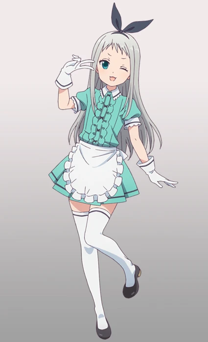

Хидэри Кандзаки
| Аниме: | Садистская смесь (Blend S) |
| Роль: | Официант в кафе «Café Stile» (Типаж: Идол) |
| Пол: | Мужской |
| Рост: | 150 см |
| Вес: | 41 кг |
Описание
Пятый сотрудник кафе «Café Stile», исполняющий роль идола. Очень милый и женственный юноша с серебристыми волосами, который одевается в стиле «готическая лолита». Хидэри родился в семье фермеров, но искренне ненавидит сельский труд и мечтает стать знаменитой поп-звездой.
Он устроился в кафе ради популярности и возможности продемонстрировать окружающим свое очарование. Обладает уверенным, местами эгоистичным характером и любит оставаться в центре внимания, однако всегда старается поддерживать дружескую атмосферу в коллективе.